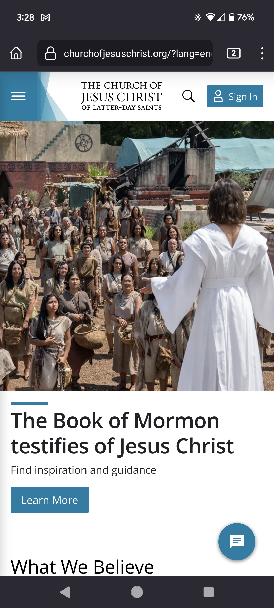

Visual Hierarchy
Church of Jesus Chrsit of Latter-day Saints
Link: churchofjesuschrist.org
The website "churchofjesuschrist.org" is a great example of visual hierarchy. The hero image is that of Jesus Christ ministering to the Nephites in the Americas. This image quickly allows the user to see the emphasis that the Church of Jesus Christ of Latter-day Saints places on the Savior and it's unique message to the world.
Rule of Thirds
Amazon
Link: amazon.com
The amazon website is a good example of breaking up the screen real estate and presenting the user with a variety of options. Not as prevelant on the mobile site, the desktop version utilizes a easy to navigate 'grid' layout.
White Space and Clean Design
FedEx
Link: fedex.com
I enjoy the FedEx mobile website. I think it's easy on the eyes. It demonstrate a great balance of high contrast colors, white, and soft shades of gray without burning my eyes. It's clean and directs the user to the main reason they're visiting, to track their package.